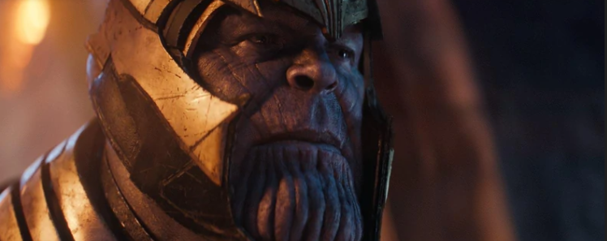
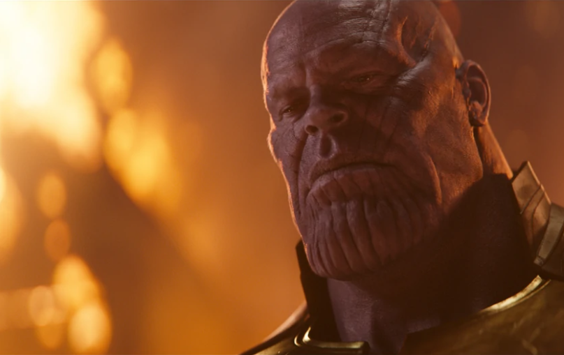

Другие версии
В импринте
Ultimate
Marvel в серии Ultimate Fantastic
Four появляется альтернативная версия
Таноса,
являющегося правителем Ашерона (и имеет сына с именем Ронан Обвинитель, одержимого Кубом[39]), огромной
империи, состоящей из тысяч миров, существующей на разных планах бытия
В альтернативной вселенной, описываемой в ограниченной серии Earth X, Танос проживает в Области Мёртвых
вместе с божеством Смерть
Танос описан в ограниченной серии Marvel Zombies 2, чьё действие разворачивается в альтернативной
вселенной
«Земля-2149». Будучи «зомбифицированным», персонаж убит Халком после ссоры
из-за еды
В ходе кроссовера 1996 года Amalgam Comics, в
котором объединялись персонажи DC Comics и
Marvel, Танос
был
объединён с Дарксайдом и стал «Таносайдом»
Мультсериалы
-
Танос появился в мультсериале «Серебряный Сёрфер», озвученный Гэри Кроуфордом. Стал главным
антагонистом Сёрфера после того, как тот покинул Галактуса. В последнем эпизоде мультсериала
Серебряный Сёрфер сражался с ним за спасение Вселенной, но, так как сериал не был завершён (было снято
только 13 эпизодов вместо запланированных 26), исход поединка остался неизвестным. Из-за стандартов
телекомпании Fox Танос описывается как поклонник женской персонификации хаоса (упоминаемой, как Леди
Хаос), а не Смерти
-
Танос появляется в «Супергеройский отряд», озвученный Стивеном Блумом в первом сезоне и Джимом
Каммингсом во втором.
-
Появляется в конце первого сезона мультсериала «Мстители, общий сбор!» и играет важную роль во втором
сезоне, являясь, по сути, главным антагонистом.
-
В м/с Стражи Галактики (2015) является главным противником в 1-м сезоне. Во втором сезоне и в третьем
он тоже появлялся. Только в третьем сезоне он становился как «запасной план для Стражей Галактики»
чтобы остановить Змея. После неудачной попытки попал в царство Хелы.
-
Разные версии Таноса появляются в мультсериале «Что, если…?».
Нападение на асгардцев

С своим кораблем, Святилищем II, Танос выследил корабль, в котором находились оставшиеся в живых асы,
которые пережили события Рагнарёка, среди них Локи и его брат Тор.[7] Танос убил всех асгардцев и стал
пытать Тора, вынуждая Локи отдать Тессеракт. Локи стал тянуть время, чтобы дать возможность Халку вступить в
бой. Танос справился с Халком, но убить не успел. Хеймдаль отправил Халка на Землю, и тогда Танос убил
Хеймдаля копьем.
В итоге Титан получил Тессеракт, раздавил его и получил камень пространства. Локи опять начал свои игры и
предложил Таносу помощь в ориентировании на Земле. Танос не купился на уловку. Он остановил клинок Локи
камнем пространства и свернул ему шею на глазах у Тора, отметив, что он на этот раз Локи не воскреснет.
Затем Танос взорвал Statesman и скрылся со своими детьми.
У Коллекционера

Следующей целью Таноса стал камень реальности, находившийся у Коллекционера. Танос заполучил камень, но
Забвение не покинул. Вскоре появились Стражи галактики, включая Гамору, и увидели, как Танос пытает Тивана.
Гаморе удалось добраться до Таноса и пронзить его клинком, тем самым, который он ей когда-то подарил. Сделав
это, Гамора расплакалась, так как ее отец умирал. Танос указал Гаморе на ее истинные чувства к нему.
При этом он был цел и невредим, а произошедшее было иллюзией, созданной камнем реальности. Друзья, Мантис и
Дракс, бросились Гаморе на помощь, но Танос исказил действительность и рассыпал их на кусочки. Гамора стала
умолять Квилла убить ее, как он ранее обещал, но Питер колебался. Таносу не понравилась подобная неуверенность,
а когда Квилл все же решился, из его пистолета вылетели лишь мыльные пузыри. На этом Танос закончил
представление, забрал Гамору и телепортировался с планеты.[